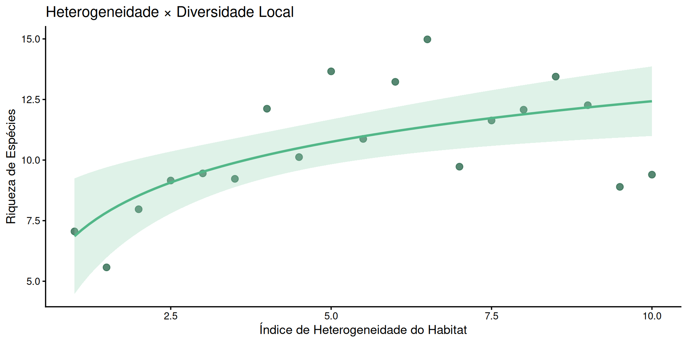
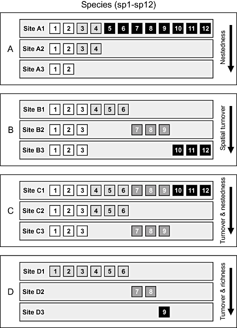
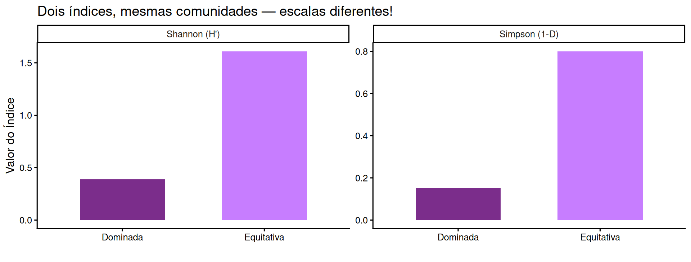
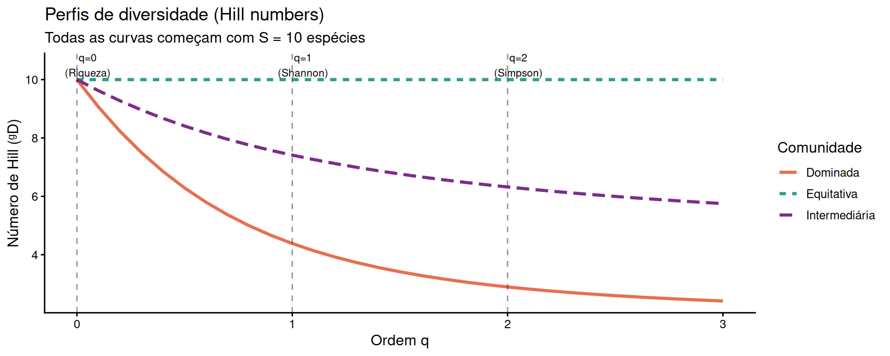
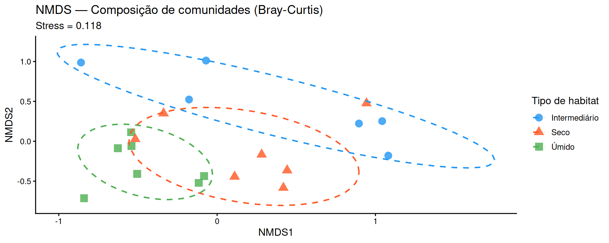
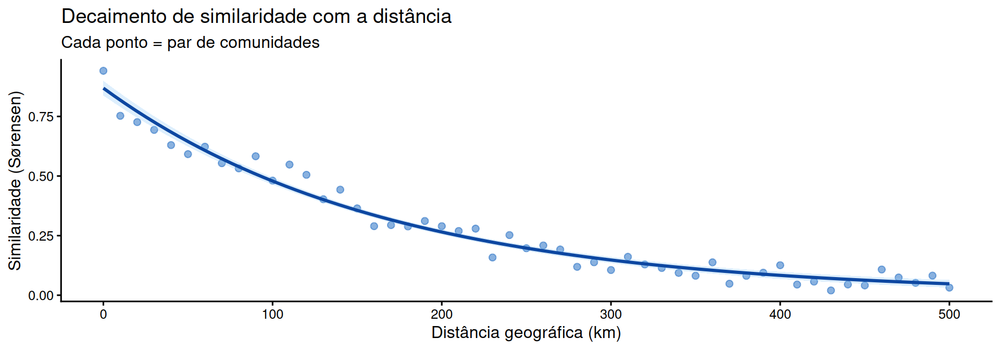
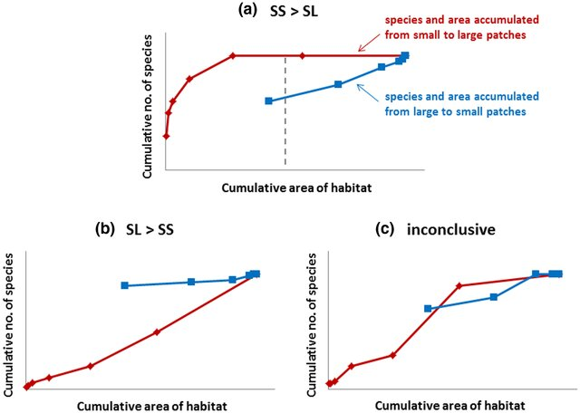
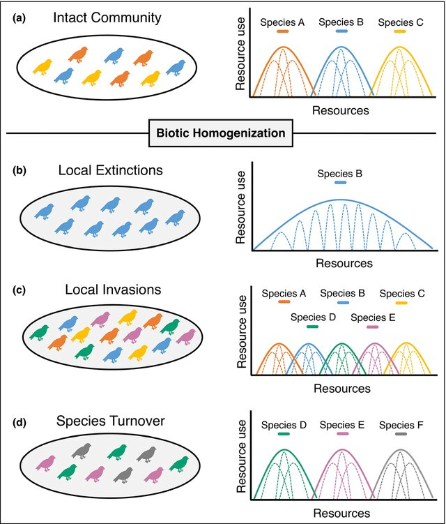

Comunidades Biológicas no Espaço
Ecologia 2 — UFPE
Departamento de Botânica
2026-05-15
Diversidade no Espaço
Heterogeneidade Espacial
Heterogeneidade espacial é a variação nas condições ambientais, na estrutura do habitat e na composição de recursos ao longo do espaço geográfico.
- Variação abiótica (clima, solo, topografia)
- Variação biótica
- Distribuição de recursos
- Histórico de perturbações

Nota
Hipótese da heterogeneidade do habitat: ambientes mais heterogêneos sustentam maior diversidade de espécies.
Por que a diversidade varia no espaço?
| Fator | Escala | Mecanismo |
|---|---|---|
| Clima | Regional/global | Limita fisiologia e produtividade |
| Topografia | Local/regional | Cria microclimas e barreiras |
| Tipo de solo | Local | Filtra espécies por nutrição |
| Perturbação | Local/regional | Abre/fecha nichos |
| Área | Regional/global | Efeito área-espécies |
| Isolamento | Regional/global | Dispersão e imigração |
Gradiente latitudinal de diversidade — o padrão mais robusto em ecologia

Hipóteses explicativas:
- Produtividade / energia disponível
- Área e tamanho dos biomas
- Estabilidade climática histórica
- Maior tempo de evolução (tropicais)
- Diferenças em taxas de especiação/extinção
Importante
Não há consenso sobre uma única causa — múltiplos fatores atuam em conjunto!
Heterogeneidade x Diversidade
- Habitats complexos = mais nichos ecológicos
- Maior número de microambientes → maior partição de recursos
- Florestas tropicais: estratificação vertical
- Recifes de coral: complexidade tridimensional
Relação Espécies–Área
Uma das relações mais importantes em ecologia de comunidades:
\[S = c \cdot A^z\]
- S = número de espécies
- A = área do habitat
- c = constante (intercepto)
- z = inclinação (0,1–0,35 para ilhas oceânicas; 0,12–0,18 para fragmentos continentais)

Diversidade α, β e γ: As Três Componentes da Diversidade
O Framework de Whittaker
Robert Whittaker propôs a partição da diversidade em três escalas hierárquicas:
┌─────────────────────────────────────┐
│ DIVERSIDADE GAMA (γ) │ ← Paisagem / Região
│ ┌────────────┐ ┌────────────┐ │
│ │ Comunid. 1│ │ Comunid. 2│ │
│ │ α = 8 sp │↔β↔│ α = 6 sp │ │ ← β entre comunidades
│ └────────────┘ └────────────┘ │
│ Diversidade Local (α) │
└─────────────────────────────────────┘Alfa (α) Diversidade dentro de um local (comunidade local)
Beta (β) Diversidade entre locais (turnover de espécies)
Gama (γ) Diversidade total da região
Diversidade Alfa (α)
Diversidade alfa é a diversidade de espécies em uma escala local, dentro de um único habitat ou comunidade.
Medidas de diversidade α:
| Medida | O que captura | Fórmula |
|---|---|---|
| Riqueza (S) | Apenas número de espécies | \(S\) |
| Shannon (H’) | Riqueza + equitabilidade | \(-\sum p_i \ln p_i\) |
| Simpson (D) | Dominância | \(1 - \sum p_i^2\) |
| Chao1 | Riqueza estimada (rarefação) | \(\hat{S} = S_{obs} + \frac{n_1^2}{2n_2}\) |
Dica
Diversidade α responde a perguntas como: “Quão diversa é esta floresta?” ou “Quantas espécies coexistem neste trecho de rio?”
Diversidade Gama (γ)
Diversidade gama é a diversidade total de uma região ou paisagem, integrando todos os locais amostrados.
Relação fundamental:
\[\gamma = \alpha \times \beta\]
- γ alta + α alta → habitats ricos, baixa substituição entre eles
- γ alta + α baixa → habitats pobres individualmente, mas compostos por espécies muito diferentes
- γ baixa + α baixa → região com poucos espécies, habitats similares
Nota
A diversidade gama depende tanto da diversidade local (α) quanto da diferenciação entre comunidades (β).
Diversidade Beta (β) — Introdução
Diversidade beta mede a variação na composição de espécies entre diferentes locais ou ao longo de gradientes ambientais.
Por que β é central em ecologia de comunidades?
- Explica como a diversidade regional é montada a partir de comunidades locais
- Reflete processos de dispersão, filtragem ambiental e interações bióticas
- Ferramenta fundamental para detectar gradientes ecológicos
- Base para planejamento de unidades de conservação complementares
Duas interpretações de β
- Turnover: substituição de espécies ao longo de gradientes
- Variação: heterogeneidade multivariada na composição de espécies

Medidas de Diversidade: Índices Clássicos vs. Números de Hill
O Problema dos Índices Clássicos
Índices como H’ (Shannon) e D (Simpson) não são diretamente comparáveis entre si:

Aviso
Shannon e Simpson medem conceitos similares, mas em escalas não comparáveis. Como somar ou comparar diretamente?
Números de Hill — A Solução Elegante
Mark Hill (1973) propôs uma família unificada de medidas de diversidade:
\[^{q}D = \left(\sum_{i=1}^{S} p_i^q \right)^{\frac{1}{1-q}}\]
Onde q é a ordem da diversidade — controla o peso dado às espécies raras vs. abundantes:
Explicando
| Ordem q | Medida equivalente | Interpretação |
|---|---|---|
| q = 0 | Riqueza (S) | Div spp raras |
| q → 1 | exp(H’) — exponencial de Shannon | Div spp comuns |
| q = 2 | 1/D (inverso de Simpson) | div spp dominantes |
Interpretação dos Números de Hill
Os números de Hill expressam diversidade em “número efetivo de espécies” — quantas espécies igualmente abundantes teriam a mesma diversidade que a comunidade observada.

Princípio do dobramento
Se uma comunidade é dividida em dois grupos igualmente abundantes e sem espécies em comum, o número de Hill deve dobrar.
\[^{q}D(A \cup B) = ^{q}D(A) + ^{q}D(B) \quad \text{, quando } A \cap B = \emptyset\]
Vantagens práticas
- Unidade intuitiva: “número equivalente de espécies”
- Comparação direta entre comunidades
- Base para decomposição aditiva e multiplicativa de diversidade
- Partição de α, β e γ matematicamente consistente
Dica
A análise de perfis de diversidade (curvas de \(^qD\) vs. \(q\)) revela a estrutura completa da comunidade, não apenas um número.
Índices vs. Hill
| Critério | Índices Clássicos | Números de Hill |
|---|---|---|
| Unidade | Adimensional (bits, nats) | Número de espécies efetivas |
| Comparabilidade | Difícil entre índices | Diretamente comparáveis |
| Decomposição α/β/γ | Problemática | Matematicamente rigorosa |
| Intuitividade | Baixa | Alta |
| Amplitude | Um aspecto por vez | Família contínua (q ≥ 0) |
| Raridade vs. dominância | Fixa por índice | Controlada por q |
| Uso em software | Muito comum | Crescendo (vegan, hillR) |
Beta-Diversidade e Heterogeneidade Espacial: Quantificando a Variação entre Comunidades
Componentes da Beta-Diversidade
\[\beta_{total} = \beta_{turnover} + \beta_{aninhamento}\]
Turnover (substituição) - Espécies de um local substituem espécies de outro - Associado a gradientes ambientais - Comunidades têm riqueza similar
A: ■ ■ ■ □ □
B: □ □ □ ■ ■Aninhamento (nestedness) - Comunidade pobre é subconjunto da mais rica - Associado a perda de habitat, fragmentação - Comunidades têm riqueza diferente
A: ■ ■ ■ ■ ■
B: ■ ■ □ □ □Medindo Beta-Diversidade: Índices de Dissimilaridade
\[\beta_{Sørensen} = \frac{b + c}{2a + b + c}\]
\[\beta_{Jaccard} = \frac{b + c}{a + b + c}\]
Onde:
- a = espécies compartilhadas entre dois locais
- b = espécies exclusivas do local 1
- c = espécies exclusivas do local 2
Beta-Diversidade: Abordagem multivariada
Para múltiplas comunidades simultaneamente, usamos ordenações:

Heterogeneidade e padrões de β


Ambientes com maior heterogeneidade espacial geram maior β-diversidade via turnover. Ambientes fragmentados podem gerar alta β por aninhamento.
Decaimento de similaridade com a distância
A similaridade entre comunidades decresce com a distância geográfica (ou ambiental).

Mecanismos: limitação de dispersão, filtragem ambiental, deriva ecológica
Partição aditiva e multiplicativa da diversidade
Duas formas de relacionar α, β e γ:
Partição Aditiva \[\gamma = \bar{\alpha} + \beta_{add}\]
- β expressa em número de espécies
- Pergunta: “Quantas espécies a mais a região tem em relação à média local?”
- Útil para comparar escala de α e β
Partição Multiplicativa \[\gamma = \bar{\alpha} \times \beta_{mult}\]
- β expressa como número de comunidades distintas
- Pergunta: “Quantas comunidades completamente distintas cabem na região?”
- Mais usada com números de Hill
Dica
Com números de Hill, a partição multiplicativa é matematicamente rigorosa em qualquer ordem q.
Aplicações Práticas: Da Teoria à Conservação e Manejo
Priorização para conservação
Complementaridade: escolher áreas que maximizem a diversidade total protegida

Monitoramento de impactos ambientais
Padrões esperados sob impacto:
- Homogeneização biótica: β diminui, comunidades se tornam mais similares
- Substituição de espécies nativas por invasoras
- Perda de espécies especialistas (raras) → aninhamento
- Ambientes impactados convergem em composição

Restauração Ecológica
Perguntas centrais na avaliação de restauração:
- A diversidade α está se recuperando?
- A composição de espécies está se aproximando de comunidades de referência? (β diminuindo)
- A heterogeneidade interna está sendo restaurada?
Restauração Ecológica
Indicadores práticos:
| Estágio da restauração | α esperada | β (restaurado vs. referência) |
|---|---|---|
| Início (0–5 anos) | Baixa | Alta (muito diferente) |
| Intermediário (5–15 anos) | Crescendo | Moderada |
| Avançado (>20 anos) | Similar à referência | Baixa (similar) |
Dica
O sucesso da restauração não se mede apenas pela riqueza local — a similaridade composicional com a referência é igualmente importante.
Resumo da Aula
| Conceito | Definição chave | Ferramenta |
|---|---|---|
| Heterogeneidade espacial | Variação ambiental no espaço | Gradientes, SIG |
| Diversidade α | Diversidade local | Riqueza, H’, Hill |
| Diversidade β | Variação composicional | Sørensen, Bray-Curtis, NMDS |
| Diversidade γ | Diversidade regional | Partição α × β |
| Números de Hill | Família unificada de medidas | vegan, hillR |
| Turnover vs. aninhamento | Componentes de β | betapart |
| Aplicações | Conservação, restauração, impacto | Análise multivariada |